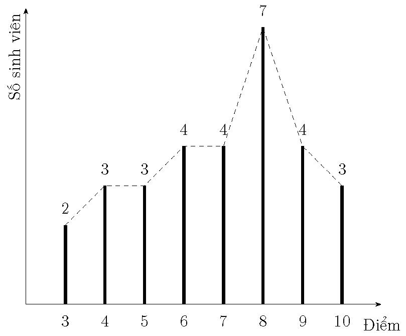

Bài 5.2:
Kết quả thi môn xác suất thống kê của lớp gồm 30 sinh viên được cho như sau:
| Điểm | 10 | 9 | 8 | 7 | 6 | 5 | 4 | 3 |
| Số sinh viên | 3 | 4 | 7 | 4 | 4 | 3 | 3 | 2 |
- Vẽ đường gấp khúc tần suất.
- Tính số điểm trung bình mà lớp đạt được, độ phân tán tiêu chuẩn của số điểm của các sinh viên.
Đáp số:
-

- \(\overline x = 6.9, {s^2} = 4.1567, s'^2 = 4.3, s = 2.0388, s' = 2.0736\).